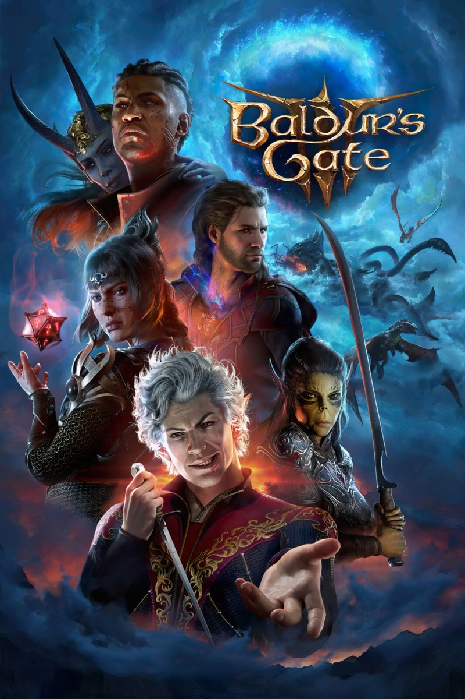
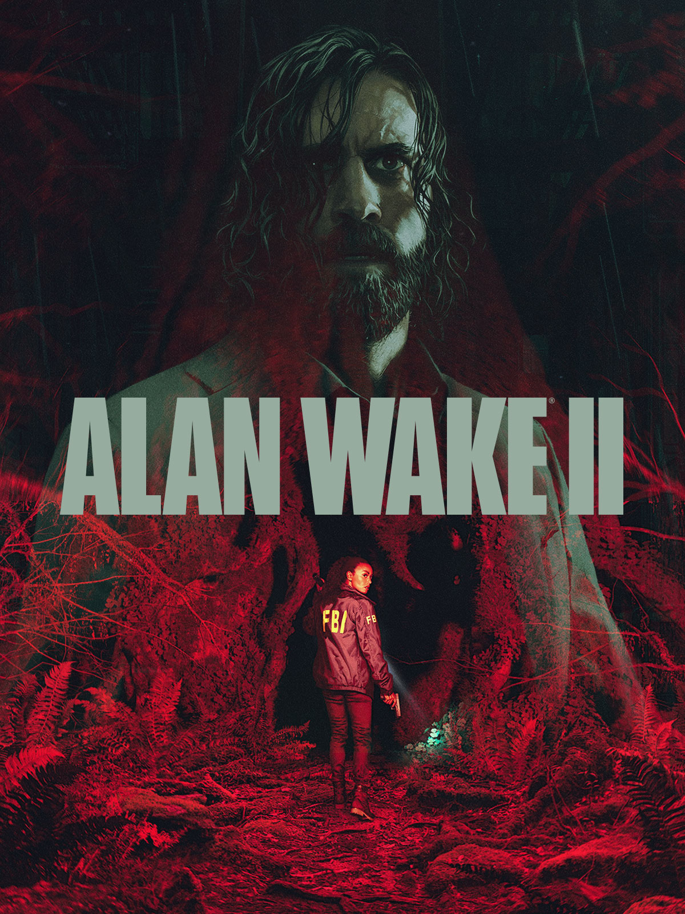
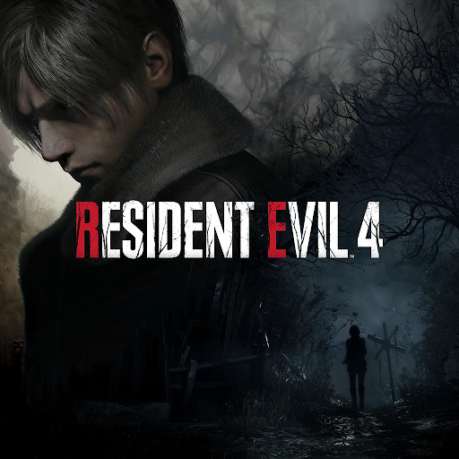
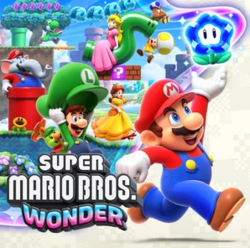

Vincitore: Baldur’s Gate 3

Data di rilascio: 3 agosto 2023
Genere: Gioco di Ruolo (RPG) / Western RPG, Strategia a turni (TBS)
Tema: Fantasy classico, Azione
Sviluppo: Larian Studios
Pubblicazione: Larian Studios
Descrizione: Un RPG profondo che mette la libertà del giocatore al centro di tutto.
Ogni scelta, anche la più piccola, può avere conseguenze durature.
Il sistema basato su D&D è complesso, ma sorprendentemente intuitivo.
I personaggi sono scritti con grande attenzione e credibilità.
La rigiocabilità è enorme grazie ai percorsi narrativi alternativi.
Un trionfo di design, scrittura e ambizione.
Altri candidati:



